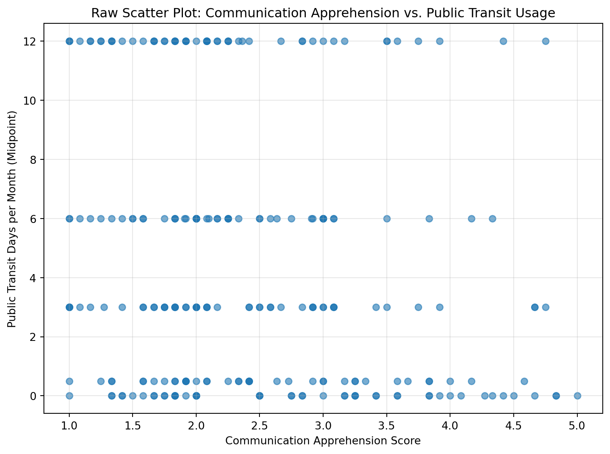
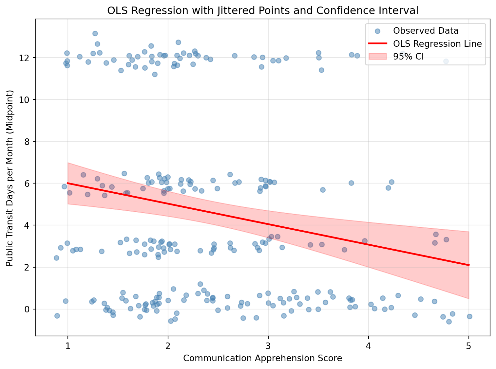
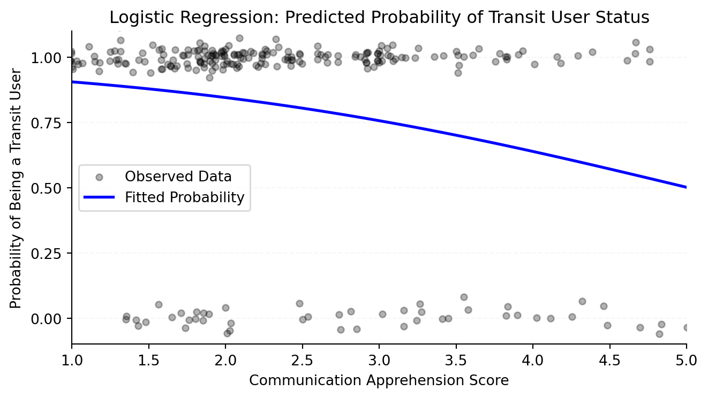
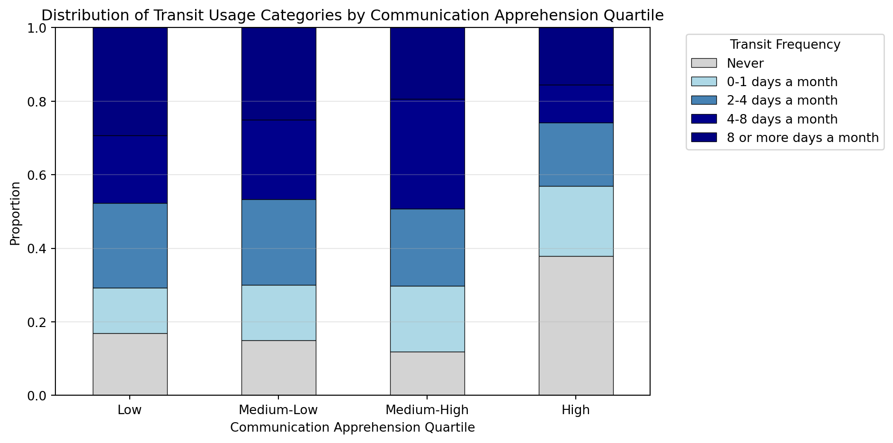

Visualizing Relationships between Communication Apprehension and Public Transit Usage
Author
Weizhu Pan
Introduction
This memo evaluates different visual strategies for illustrating the potential relationship between communication apprehension and public transportation usage. Given the complex nature of the dependent variable—which can be operationalized as continuous midpoint estimates, ordinal categories, or binary user status—we compare four distinct visualization approaches to assess their strengths and limitations for different data types and analytical contexts.
Data Preparation
import pandas as pdimport numpy as npimport matplotlib.pyplot as pltimport seaborn as sns# Load the datadf = pd.read_csv('../../original_data/merged_data.csv')df = df.iloc[2:].reset_index(drop=True)# Define the Likert scale mappinglikert_mapping = {"Strongly disagree": 1,"Somewhat disagree": 2,"Neither agree nor disagree": 3,"Somewhat agree": 4,"Strongly agree": 5}# Communication apprehension items to recodecommunication_apprehension_items = ['Q1', 'Q2', 'Q3', 'Q4', 'Q5', 'Q6', 'Q13', 'Q14', 'Q15', 'Q16', 'Q17', 'Q18']# Items to reverse-code (Q2, Q4, Q6, Q14, Q16, Q17)reverse_code_items = ['Q2', 'Q4', 'Q6', 'Q14', 'Q16', 'Q17']# Recode communication apprehension itemsfor item in communication_apprehension_items:if item in df.columns: df[item] = df[item].map(likert_mapping)# Reverse-code itemsfor item in reverse_code_items:if item in df.columns: df[item] =6- df[item]# Compute composite communication apprehension scorecommunication_apprehension_columns = [col for col in communication_apprehension_items if col in df.columns]df['communication_apprehension_score'] = df[communication_apprehension_columns].mean(axis=1)# Recode public transit usage frequency (Q26) - midpoint estimationtransit_midpoint_mapping = {"Never": 0.0,"0-1 days a month": 0.5,"2-4 days a month": 3.0,"4-8 days a month": 6.0,"8 or more days a month": 12.0}if'Q26'in df.columns: df['public_transit_days'] = df['Q26'].map(transit_midpoint_mapping)# Binary indicator for transit usageif'Q26'in df.columns: df['is_transit_user'] = df['Q26'].apply(lambda x: 0if x =="Never"else1if pd.notna(x) else np.nan)# Drop NA valuesdf_clean = df.dropna(subset=['communication_apprehension_score', 'public_transit_days', 'is_transit_user'])print(f"Sample size after cleaning: {len(df_clean)}")
Sample size after cleaning: 250
Visualization Strategy 1: Raw Scatter Plot
plt.figure(figsize=(8, 6))plt.scatter(df_clean['communication_apprehension_score'], df_clean['public_transit_days'], alpha=0.6)plt.xlabel('Communication Apprehension Score')plt.ylabel('Public Transit Days per Month (Midpoint)')plt.title('Raw Scatter Plot: Communication Apprehension vs. Public Transit Usage')plt.grid(alpha=0.3)plt.tight_layout()plt.show()

Figure 1: Raw scatter plot of communication apprehension score vs. public transit days
Visualization Strategy 2: Jittered OLS Regression
import statsmodels.api as sm# Prepare data for regressionX = df_clean['communication_apprehension_score']X = sm.add_constant(X)y = df_clean['public_transit_days']# Run OLS regressionmodel_ols = sm.OLS(y, X).fit()# Add jitter to pointsnp.random.seed(42)jitter_y = df_clean['public_transit_days'] + np.random.normal(0, 0.3, len(df_clean))jitter_x = df_clean['communication_apprehension_score'] + np.random.normal(0, 0.05, len(df_clean))# Create plotplt.figure(figsize=(8, 6))plt.scatter(jitter_x, jitter_y, alpha=0.5, s=30, color='steelblue', label='Observed Data')# Plot regression line with confidence intervalx_pred = np.linspace(df_clean['communication_apprehension_score'].min(), df_clean['communication_apprehension_score'].max(), 100)x_pred_const = sm.add_constant(x_pred)y_pred = model_ols.predict(x_pred_const)y_pred_ci = model_ols.get_prediction(x_pred_const).conf_int()plt.plot(x_pred, y_pred, 'r-', linewidth=2, label='OLS Regression Line')plt.fill_between(x_pred, y_pred_ci[:, 0], y_pred_ci[:, 1], alpha=0.2, color='red', label='95% CI')plt.xlabel('Communication Apprehension Score')plt.ylabel('Public Transit Days per Month (Midpoint)')plt.title('OLS Regression with Jittered Points and Confidence Interval')plt.legend()plt.grid(alpha=0.3)plt.tight_layout()plt.show()

Figure 2: OLS regression plot with jittered points and 95% confidence interval
# Prepare data for logistic regressionX_logit = df_clean['communication_apprehension_score']X_logit = sm.add_constant(X_logit)y_logit = df_clean['is_transit_user']# Run logistic regressionmodel_logit = sm.Logit(y_logit, X_logit).fit()# Generate predicted probabilities across full rangex_range = np.linspace(1, 5, 100)x_range_const = sm.add_constant(x_range)predicted_probs = model_logit.predict(x_range_const)# Add jitter to binary data pointsnp.random.seed(42)jitter_y = df_clean['is_transit_user'] + np.random.normal(0, 0.03, len(df_clean))jitter_x = df_clean['communication_apprehension_score'] + np.random.normal(0, 0.02, len(df_clean))# Create plot with minimal stylingplt.figure(figsize=(7, 4))plt.scatter(jitter_x, jitter_y, color='black', alpha=0.3, s=20, label='Observed Data')plt.plot(x_range, predicted_probs, 'b-', linewidth=2, label='Fitted Probability')# Stylingplt.xlabel('Communication Apprehension Score')plt.ylabel('Probability of Being a Transit User')plt.title('Logistic Regression: Predicted Probability of Transit User Status')plt.ylim(-0.1, 1.1)plt.yticks([0.00, 0.25, 0.50, 0.75, 1.00])plt.xlim(1, 5)# Remove top and right spinesax = plt.gca()ax.spines['top'].set_visible(False)ax.spines['right'].set_visible(False)ax.spines['left'].set_color('black')ax.spines['bottom'].set_color('black')# Minimal gridax.grid(axis='y', alpha=0.1, linestyle='--')plt.legend()plt.tight_layout()plt.show()
Optimization terminated successfully.
Current function value: 0.475997
Iterations 6

Figure 3: Logistic regression sigmoid curve with jittered binary points
Visualization Strategy 4: Proportional Stacked Bar Chart
# Create quartiles for communication apprehensiondf_clean['ca_quartile'] = pd.qcut(df_clean['communication_apprehension_score'], q=4, labels=['Low', 'Medium-Low', 'Medium-High', 'High'])# Get original transit categoriestransit_order = ["Never", "0-1 days a month", "2-4 days a month", "4-8 days a month", "8 or more days a month"]# Create crosstabcrosstab = pd.crosstab(df_clean['ca_quartile'], df_clean['Q26'], normalize='index')crosstab = crosstab[transit_order] # Ensure correct order# Create stacked bar chartfig, ax = plt.subplots(figsize=(10, 5))crosstab.plot(kind='bar', stacked=True, ax=ax, color=['lightgray', 'lightblue', 'steelblue', 'darkblue', 'navy'], edgecolor='black', linewidth=0.5)plt.xlabel('Communication Apprehension Quartile')plt.ylabel('Proportion')plt.title('Distribution of Transit Usage Categories by Communication Apprehension Quartile')plt.legend(title='Transit Frequency', bbox_to_anchor=(1.05, 1), loc='upper left')plt.xticks(rotation=0)plt.ylim(0, 1)plt.grid(axis='y', alpha=0.3)plt.tight_layout()plt.show()

Figure 4: Proportional stacked bar chart of transit categories by communication apprehension quartiles